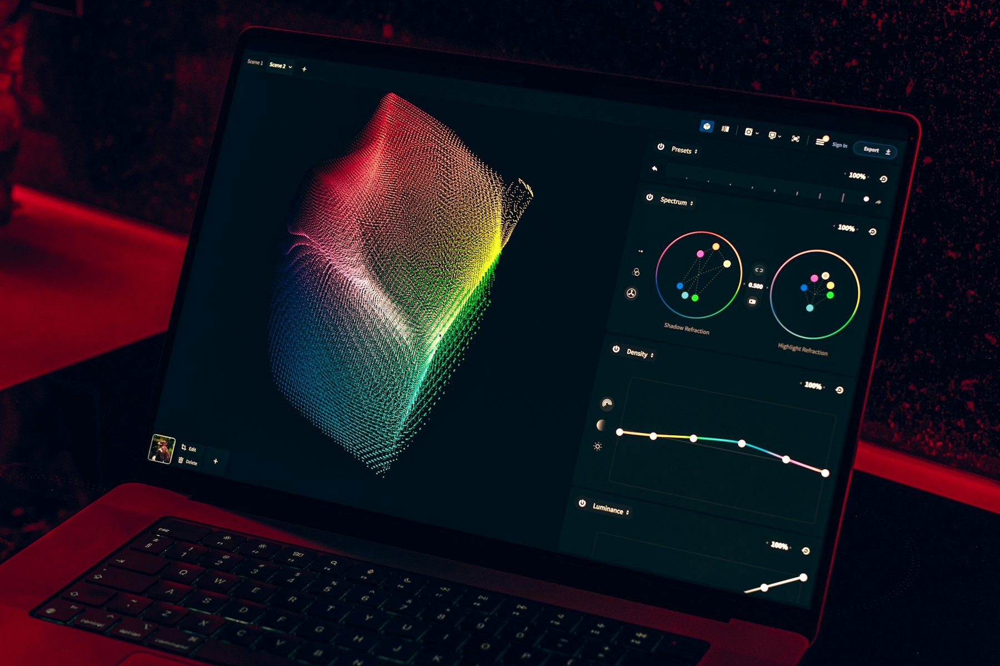

TL;DR
To build a diversified portfolio, start with ETFs like Vanguard Total Stock Market ETF (VTI). Avoid individual stocks to minimize risk and consider a monthly investment plan for consistent growth.
Start with ETFs and Mutual Funds for Instant Diversification
### Start with ETFs and Mutual Funds for Instant Diversification
If you're a beginner looking to invest, start with ETFs (Exchange-Traded Funds) and mutual funds, as they offer an accessible way to achieve instant diversification. These investment vehicles allow you to gain exposure to a broad range of assets without the need to dive deep into research on individual stocks.
For instance, consider investing $500 in the Vanguard Total Stock Market ETF (VTI). By doing so, you’re not just investing in one or two companies; instead, you're effectively buying a tiny piece of over 3,500 stocks across various sectors, including technology, healthcare, and consumer goods.
Let's say you allocate your $500 to VTI and watch it over a year. If VTI appreciates at an average annual rate of 10%—a reasonable expectation historically—that initial investment could grow to about $550. On the flip side, if you had instead chosen just three individual stocks and one of them performed poorly, the entire value of your investment could diminish significantly.
For a more structured example, consider a beginner investor named Sarah who decides to invest $1,000. Instead of risking it all on picking stocks, she splits her investment between two ETFs—$500 in VTI and $500 in the Vanguard FTSE Developed Markets ETF (VEA).
Over a year, VTI might rise by 8%, while VEA could increase by 12%. By year-end, her total investment could be worth around $1,060, showcasing the power of diversification and mitigating risks associated with individual stock volatility.
Investing in ETFs and mutual funds not only reduces risk but also provides a level of simplicity, making it easier for novices to manage their investments and track performance over time. This approach is ideal for those who may not have the time or expertise to follow the stock market closely.
Understanding the Pitfalls of Relying on Individual Stocks
### Understanding the Pitfalls of Relying on Individual Stocks
Many beginners misguidedly believe that investing in individual stocks is the only way to achieve substantial returns. However, this approach can be fraught with risk. Concentrating your investment in one or two stocks leaves you vulnerable to the whims of the market.
For instance, if you invest $1,000 in a single tech stock, and that company announces disappointing quarterly earnings, you might see that stock plummet by 20% or more in just a few days.
A decline of this magnitude would erase $200 of your investment in a matter of moments, which can be devastating for someone just starting their investing journey.
Consider the case of company XYZ, which over the last year saw its stock price double, luring many investors. However, when the company faced regulatory scrutiny that caused its stock price to drop by 30% in a single day, those who had heavily invested in XYZ faced massive losses.
If an investor had allocated $5,000 solely to this stock, they would have lost $1,500 almost overnight, illustrating the extreme volatility involved in individual stock investing.
Research from financial institutions illustrates that about 90% of actively managed funds fail to outperform their benchmarks over the long term. This statistic reveals the inherent risk of picking individual stocks, as even professional investors may struggle to generate consistent gains.
For the average investor, this translates to difficulty in achieving sustainable investment growth through individual stock selection.
On the other hand, investing in diversified funds, such as the iShares Core S&P 500 ETF (IVV) or a total market index fund, can mitigate this risk significantly. For instance, if your diversified investment of $1,000 is spread across 500 companies, a downturn in just one company—a loss of 20%—would only affect a fraction of your overall investment, shielding your portfolio from substantial harm.
Additionally, if you choose to invest in mutual funds or exchange-traded funds (ETFs) instead of individual stocks, you're inherently spreading the risk across a variety of sectors.
For instance, investing in a sector fund focused on technology still covers a wide array of companies, from software to hardware, providing a more balanced risk profile. Although you may sacrifice some potential high returns from a single standout stock, this diversified approach tends to lead to steadier returns over time.
In summary, while the allure of individual stocks might be tempting due to the potential for high profits, the consequences of concentrated investments can lead to significant losses. Opting for diversified investments allows for a more measured approach, reducing the potential impact of a downturn in any single investment.
Implementing a 30-Day Plan for Fund Selection

### Implementing a 30-Day Plan for Fund Selection
Creating a diversified portfolio doesn’t have to be complicated. Follow this simple 30-day plan designed to get you started on the path to investment success, without the need for individual stocks.
Day 1-7: Define Your Strategy and Research Begin by defining your investment goals—these may include retirement savings, building a home down payment fund, or funding your child's education. At the same time, assess your risk tolerance. Are you willing to take on more risk for potentially higher returns, or do you prefer a conservative approach to safeguard your capital?
Once you know your goals and comfort level, start researching. Aim to shortlist 5-7 Exchange-Traded Funds (ETFs) that align with your objectives. For instance, if you are targeting long-term growth with a moderate risk appetite, consider funds like the Vanguard Total Stock Market ETF (VTI), which provides broad exposure to the U.S.
equity market, or the iShares Core MSCI Total International Stock ETF (IXUS) for a mix of international equities.
Day 8-14: Allocate Your Budget Assuming you have a monthly budget set aside for investments—let’s say $400—decide how you’d like to allocate these funds across your selected ETFs.
You might choose to divide this amount evenly, dedicating $57 to each fund, or you could allocate more to a fund you believe will perform best. Perhaps you decide to invest 40% into VTI for its growth potential and the remaining 60% split between IXUS and the Schwab U.S.
Aggregate Bond ETF (SCHZ) for added stability.
Day 15: Execute Your First Investment Now, take action! On Day 15, make your first investment according to your predetermined allocation. If you opted for the evenly distributed approach, you would purchase $57 worth of VTI. Monitor transaction costs as well; many brokers offer commission-free ETF trades, which can aid in maximizing your investment potential.
Days 16-30: Continue Investing Weekly Moving forward, commit to investing in one of your selected funds each week until you’ve fully allocated your target amount. In the following week, invest in IXUS, then SCHZ the week after. This staggered approach can help smooth out market volatility; if one of your funds drops in value, you'll still benefit from making more contributions over time, often at lower prices.
Scenario Case: A Young Investor Consider Sarah, a 28-year-old professional looking to create a diversified portfolio without investing in individual stocks. She decides to follow this 30-day plan after assessing her goals—for her, it’s saving for a down payment on a house in about five years.
Sarah’s risk tolerance is moderate, so she selects a mix of ETFs that combine growth potential and stability. She allocates $400 monthly, buying $57 of VTI, $57 of IXUS, and $57 of SCHZ each week, allowing her to build a diversified, resilient portfolio over time.
By the end of the 30 days, she has not only invested $800 but also gained a sense of confidence and familiarity with the market, setting herself up for long-term financial success.
This method not only aids in portfolio diversification but also teaches valuable investment habits, allowing you to gain exposure to various sectors and asset classes with less risk compared to single stock investments.
Realistic Example: $1,200 Investment in Action
### Realistic Example: $1,200 Investment in Action
Let’s consider you have decided to invest $1,200, a reasonable amount for a beginner looking to dip their toes into diversified investing without resorting to individual stocks. You’ve chosen to allocate your funds evenly across three different exchange-traded funds (ETFs), investing $400 in each.
In the first week, you decide to invest in the iShares MSCI ACWI ex U.S. ETF (ACWX). This fund focuses on international stocks, offering exposure to a broad range of companies outside the United States.
If you purchased ACWX at $50 per share, you would acquire 8 shares. By the end of the week, you'll own a piece of hundreds of international companies in a single transaction, which helps mitigate risks that could arise solely from U.S.
market fluctuations.
Moving into the second week, your focus shifts to the Vanguard Total Bond Market ETF (BND). Assume bonds are particularly attractive right now due to lower interest rates. If BND is trading at $80 per share, your $400 investment would allow you to buy 5 shares.
Bonds tend to offer more stability and lower volatility compared to stocks, which means that if the stock market plunges, this portion of your portfolio is likely to remain steadier, providing a buffer against potential losses.
In the third week, you turn your attention to the SPDR S&P 500 ETF (SPY), which tracks the performance of 500 of the largest U.S. companies. Let’s say SPY is priced at $400 per share at the time of your investment.
You would be able to purchase just 1 share, resulting in a total of $400 invested here. SPY can provide exposure to the robust performance of leading U.S. companies, giving you a foothold in the domestic market.
Throughout the month, you gradually build a well-rounded portfolio consisting of 8 shares of ACWX, 5 shares of BND, and 1 share of SPY. This balanced approach insulates you against significant swings that may occur in any one market segment.
Now, let’s explore a potential scenario: Suppose the market experiences a downturn due to rising geopolitical tensions. While it’s common to see drops in stock prices, the diversified nature of your portfolio tempers the impact.
Since your bond investment (BND) usually holds steady or even appreciates during such times as investors flock to safer assets, your overall portfolio remains more resilient. For instance, while SPY might decline by 10%, ACWX could drop by 8%, but BND could rise by 2%.
Overall, your diversified investments work in tandem, allowing you to face market turmoil with less anxiety, knowing that not all segments of your portfolio will react adversely at once. Diversification can make a sizable difference in your investment journey, illustrating that prudent allocation can provide peace of mind in fluctuating markets.
Avoiding Costly Mistakes in Fund Selection

### Avoiding Costly Mistakes in Fund Selection
While investing in funds, many beginners overlook critical factors like fund fees, performance history, and manager credibility. One prevalent mistake is prioritizing potential returns over the associated costs.
For instance, take a closer look at two ETFs: Fund A has a 1% expense ratio, while Fund B charges only 0.3%. If you hypothetically invest $10,000 in both with an average annual return of 7%, after 30 years, the value of your investments would be approximately $76,000 for Fund A and about $94,000 for Fund B.
The stark difference in returns—nearly $18,000 lost to fees—illustrates how seemingly low fees can add up significantly over time.
Another common pitfall is misunderstanding the various types of funds. Actively managed funds, although they promise higher returns, often fail to outperform their benchmark indexes once fees are factored in.
For instance, according to a report by SPIVA (S&P Indices Versus Active), over a 15-year period, approximately 85% of actively managed large-cap funds underperformed the S&P 500 Index.
This raises an essential question: Are you willing to gamble on an uncertain promise of outperformance when a simple index fund could yield consistently positive returns at a lower cost?
Consider a real-world scenario where a new investor, Sarah, decides to allocate her $50,000 retirement savings. She has two options: an actively managed fund with a 1.2% expense ratio and a well-known index fund with a 0.04% expense ratio.
Assuming an average market return of 7% over 20 years, if Sarah chooses the active fund, her investment would grow to approximately $116,000. In contrast, the index fund would yield about $193,000.
The tradeoff here is significant—over $77,000 lost due to higher fees and management underperformance.
Additionally, it’s crucial to research the fund manager's track record, as management quality can greatly influence fund performance. A manager with a long history of success can be a reliable asset, but remember that past performance is not a guarantee of future results.
Take your time to read reviews, analyses, and ratings from reputable sources. Overall, navigating the world of fund selection requires diligence in understanding fees, performance history, and management credibility to truly build a diversified portfolio without risks tied to individual stocks.
Choosing the Right ETFs and Tools for Beginners
### Choosing the Right ETFs and Tools for Beginners
For beginners, starting with the right tools can simplify your investment journey significantly. Firstly, consider using reputable platforms like Vanguard or Charles Schwab; both offer a variety of low-cost ETFs alongside user-friendly interfaces that can help smooth the learning curve.
For example, Vanguard's Total Stock Market ETF (VTI) carries an expense ratio of just 0.03%, making it an cost-effective option for broad market exposure.
In addition to traditional brokerage platforms, explore investment apps like Acorns or Robinhood. Acorns allows you to start investing with as little as $5 by rounding up your daily purchases and investing the spare change.
On the other hand, Robinhood offers commission-free trading, enabling you to buy ETFs like the iShares Russell 2000 ETF (IWM) at no additional cost, giving you access to small-cap stocks that can enhance your portfolio diversification.
When diversifying, it’s advisable to focus on broad-market ETFs initially, such as the Vanguard S&P 500 ETF (VOO) or the SPDR S&P 500 ETF Trust (SPY). These funds not only provide immediate diversification across numerous sectors but also have historical annual returns averaging around 10% over the long term, assuming the market conditions remain favorable.
Avoid diving into overly complicated asset classes or sector-specific ETFs at this stage; they can increase risk without guaranteed returns.
For example, imagine a beginner, Sarah, who decides to invest $1,000 using Acorns. By utilizing the round-up feature and investing her spare change, she consistently adds to her portfolio over a few months.
By choosing a diversified ETF like VTI, after one year, her investment's value might grow to approximately $1,100, assuming a conservative annual return of 10%. This not only boosts her confidence but also lays a solid foundation for more complex investment strategies as she becomes comfortable with the market.
Alternatively, if she had chosen a sector-specific ETF focused solely on technology, her returns could be volatile depending on market conditions, emphasizing the importance of starting broad.
Overall, prioritizing simplicity with diversified ETFs is a smart way for beginners to grow their investments over time.
FAQ
What are the best ETFs for beginners?
Some great ETFs for beginners include the Vanguard Total Stock Market ETF (VTI) and the iShares Core S&P 500 ETF (IVV). Both offer broad market exposure with low fees.
How often should I review my investment portfolio?
It's advisable to review your investment portfolio every 6 months. This allows you to make necessary adjustments according to market conditions and your financial goals.
Can I start investing with a small amount?
Yes, you can start investing with as little as $5, especially through platforms like Robinhood or Acorns that allow fractional share investing.
This article has been reviewed for practical usefulness and is updated when information changes.
Next step
Use the article as a decision point, not just reading material. Your next system matters more than more browsing.
Search more articles
Find related tools, workflows, and guides.
Photo credits
- Photo 1: Jakub Żerdzicki via Unsplash
- Photo 2: Surface via Unsplash
- Photo 3: congerdesign via Pixabay
- Photo 4: miaikransen via Pixabay
- Photo 5: Egor Komarov via Unsplash